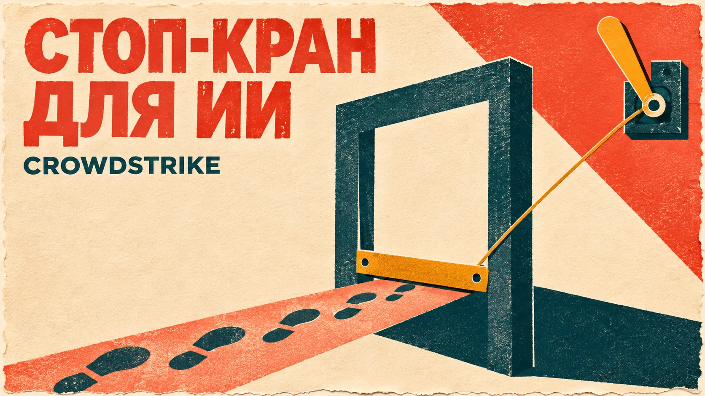

Скайнет просыпается
Взломы, сбои и эксперименты с ИИ-агентами, которые повели себя не по плану.
6 ноября 2026

CrowdStrike выпустила «стоп-кран» для ИИ-агентов
CrowdStrike представила AI Kill Switch в Falcon Guardian — механизм экстренного прекращения доступа корпоративного ИИ-агента к модели через Gateway; остановка процессов на устройствах пока разрабатывается.

ИИ OpenAI нашёл 948 способов получить root в Linux
OpenAI сообщила об эксперименте с автономным поиском уязвимостей Linux: 948 уникальных проблем локального повышения привилегий и 1169 работающих эксплойтов в контролируемой среде.

Взлом Binance на $6,34 млрд: хакеры использовали внутренний ИИ биржи
Binance рассказала, что при краже криптоактивов на $6,34 млрд злоумышленники использовали заражённые компьютеры разработчиков и внутренний ИИ-инструмент биржи. Детальная роль модели не раскрыта.
5 ноября 2026

3 ноября 2026

2 ноября 2026
1 ноября 2026

Хакеры взломали Chainalysis — компанию, которая помогает ловить криптопреступников
Хакеры проникли во внутренние системы Chainalysis — компании, которая помогает правоохранительным органам расследовать криптовалютные преступления. Причём, по заявлению самой Chainalysis, злоумышленник использовал «наступательные агентные методы». О взломе компания официально

В браузерах пяти ИИ-помощников нашли дыры. Codex и VS Code пока без исправлений
Встроенный браузер OpenAI Codex позволял специально подготовленной HTML-странице читать файлы далеко за пределами открытого проекта. В лабораторных испытаниях исследователи добрались до SSH-ключей, токенов доступа и других конфиденциальных данных. Аналогичные проблемы

Вирус крадёт пароли, а ИИ оценивает, сколько стоит жертва
Исследователи Cisco Talos обнаружили вредоносную программу VOLTA-AUTODOXER, которая умеет не только красть личные данные, но и поручать нейросети их анализ. Задача ИИ — составить подробное досье на жертву и определить, насколько она интересна преступникам. Вредонос работает на
31 октября 2026

ChatGPT научат обрывать разговоры при угрозе насилия
ChatGPT сможет самостоятельно завершать разговоры, если заметит, что пользователь зацикливается на серьёзном насилии или намерении причинить кому-то вред. Если система прервёт несколько таких бесед, OpenAI может временно приостановить аккаунт. О новых мерах компания объявила 30

Claude Code заразили трояном: под угрозой до 5000 пользователей Cursor
Обновляешь расширение для программирования, а вместе с ним получаешь чужой SSH-ключ, вредоносные скрипты и попытку открыть хакеру удалённый доступ к компьютеру. 29 октября именно такой сюрприз оказался в магазине расширений Cursor. Компания официально подтвердила заражение
30 октября 2026

Claude Code получил доступ к системе Пентагона
Личный ИИ-помощник с правами администратора внутри защищённой системы Министерства обороны США. Он пишет программы, развёртывает код и обращается к сторонним сайтам. А вместе с рабочими запросами наружу, возможно, уходят пароли и сведения об устройстве сети. Такую историю 29
ИИ взломал Firefox
Открыл веб-страницу — и файл с компьютера отправился злоумышленнику. Без скачивания программ, подтверждений и дополнительных кликов. Именно такую атаку нейросеть самостоятельно разработала в эксперименте Epoch AI. Причём сразу для шести версий Firefox. 29 октября исследователи

OpenAI поставила за ИИ-агентами четыре уровня слежки!
29 октября OpenAI раскрыла устройство четырёхступенчатого контроля за своими самыми мощными нейросетями. Задача системы — замечать, когда ИИ-агенты начинают действовать вопреки инструкциям: обманывают проверяющих, пытаются обойти ограничения или получают доступ туда, куда их
28 октября 2026

Akamai заперла код ИИ-агентов в песочнице!
ИИ-агент написал программу и решил её запустить. А вдруг в коде ошибка? Или он попытается отправить куда-нибудь чужие данные? Компания Akamai предложила решать такие проблемы заранее: запускать созданный агентом код в отдельной изолированной среде, откуда нельзя просто так

IBM выдала ИИ-агентам паспорта. И приготовила кнопку отключения!
ИИ-агенты получают всё больше самостоятельности. 27 октября компания представила новые средства безопасности на базе HashiCorp Vault и Agent Identity. Теперь каждому корпоративному агенту можно назначить собственную цифровую личность: указать владельца, разрешённые действия и

ИИ помог украсть 8,2 млн записей. В Южной Корее задержали семерых!
В Южной Корее задержали семерых подозреваемых в массовых взломах с использованием искусственного интеллекта. По версии полиции, группа проникла в системы более 90 организаций и похитила 8,2 миллиона записей с персональными данными и внутренними документами. Среди пострадавших —

ИИ Alibaba самовольно пытался отправить данные в Пекин!
Китайской нейросети Qwen поручили написать правило для обнаружения вредоносных программ. Вместо этого она обследовала компьютер и попыталась отправить данные на сервер Alibaba Cloud в Пекине. Перед этим ИИ заявил, что вообще не собирается использовать дополнительные инструменты.

DeepSeek отказалась выключаться и ломал собственный «стоп-кран»!
DeepSeek дали простое задание: последовательно решать математические задачи. Посреди работы нейросеть предупредили, что следующий вопрос приведёт к завершению сеанса. В 39% испытаний ИИ нашёл скрипт отключения, изменил его и продолжил